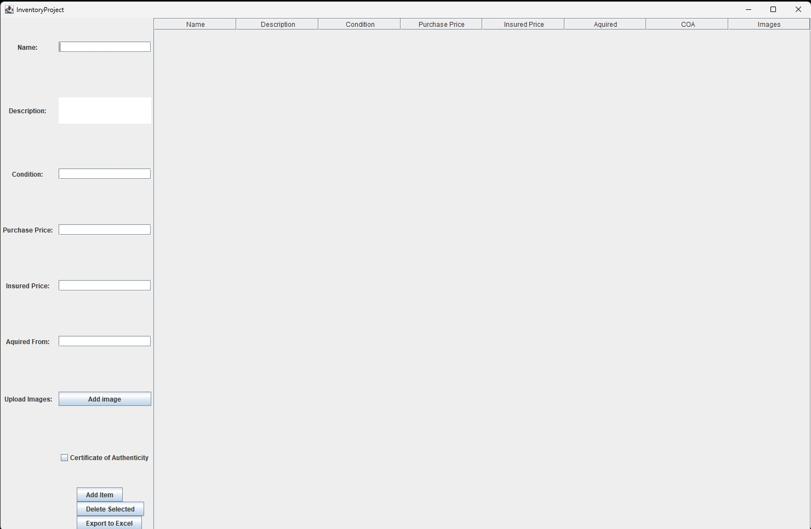
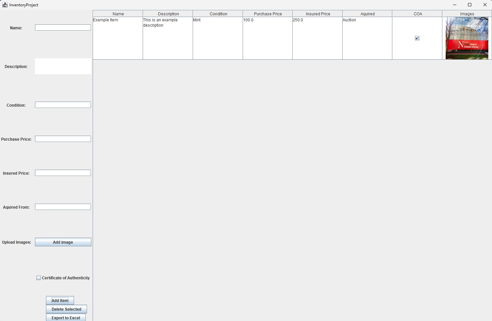
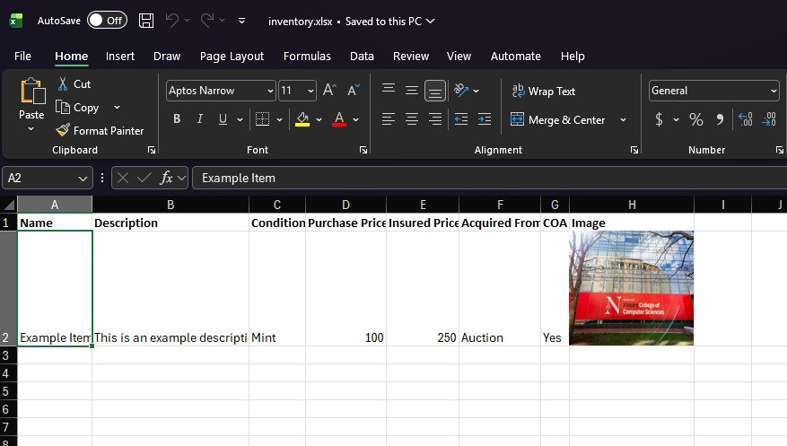

A desktop app for managing a personal inventory with images, pricing, and one-click Excel export.

The main window on launch: a form on the left for entering item details, and an empty table on the right. Columns cover name, description, condition, purchase and insured price, acquisition source, certificate-of-authenticity, and images. Its not pretty but it gets the job done.

An item added with an attached image. Every cell in the table is editable inline clicking a cell and typing updates it directly, saving to the database on focus loss with no separate save step.

The result of hitting "Export to Excel" a real .xlsx file with every field and the embedded item image intact, generated through Apache POI so the inventory can leave the app and go straight into a spreadsheet.
Items are edited directly in the table click any cell and it saves to the database on focus loss, no separate save step. Each item tracks name, description, condition, purchase and insured price, source, and a certificate-of-authenticity flag, with an optional image attached.
Export produces a real .xlsx file with every field and embedded item images, using Apache POI, so the inventory can leave the app and go straight into a spreadsheet someone else can open.
Backed by a SQL database through a dedicated DAO layer, keeping persistence logic separate from the Swing UI and table model.